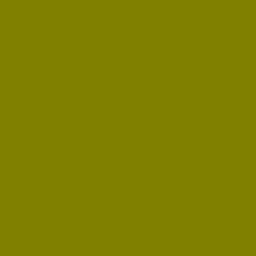
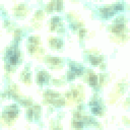
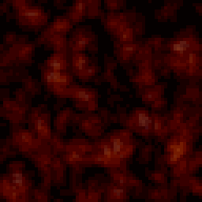
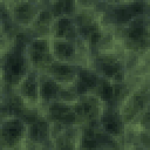
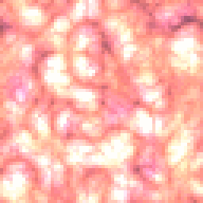
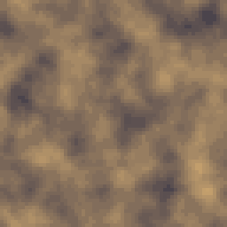
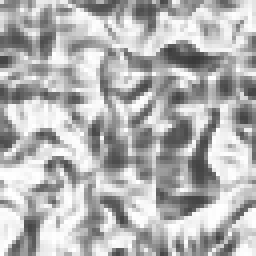
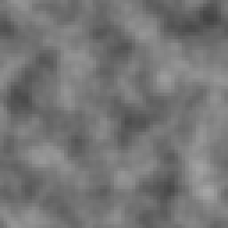
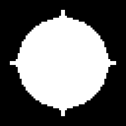

Arithmetic on buffers, channel by channel and pixel by pixel: the three typed constants (Value, Value 2, Value 3) for a number instead of a swatch, the four binary operators, and three more specific tools (Pow, Dot, Formula) for the reshaping a graph occasionally needs that the Filters category does not already cover. Mask Ops lives here too: its five operations are the same Blend, Multiply and Subtract nodes underneath, just named for boolean mask algebra instead of image compositing.
None of these draw a shape or a field on their own (the three Value nodes aside); they exist to combine or reshape buffers that came from somewhere else in the graph, which is why almost every node here reads two inputs, A and B, rather than one.
Emits a one-channel constant as a flat image.
A flat gray at one exact byte value, 0 to 255, rather than picked from a color swatch. It is a Solid you can drive by number: wire the same Value into a Formula's math, or key it precisely from 0 to 255 for a linear fade a color picker cannot give you as exactly.
I reach for this ahead of Solid whenever the number itself matters more than the color it happens to look like: a fixed gray level to compare against in Mask Ops' Threshold, a mid-gray plate to test a Bevel or a Normal node's neutral response, a constant fed into one side of a Dot or a Math operator where a literal number reads clearer in the graph than a swatch would.
The single Value writes identically into red, green and blue at full opaque alpha, so downstream it reads exactly like a grayscale Solid, just easier to reason about when the number is the point.
In: nothing · Out: image
Parameters

Emits two constants, one in the red channel and one in the green.
Two independent byte constants, X into red and Y into green, blue left at 0. It exists for the same reason Value does, doubled: a fixed two-component value (an offset, a direction encoded as two bytes) that a Formula or a Dot node downstream can read back out precisely, rather than approximating it by eye with a color swatch.
Reach for this ahead of RGBA Merge when only two channels actually carry meaning and the third would just be dead weight; blue reads 0 here rather than repeating red the way Value does, so this does not look like a two-tone Solid, it reads as a dim green-red mix rather than a clean gray.
I use it most for feeding a constant two-axis value into a Formula's a/b sampling, or for a quick fixed comparison value in a Dot node when checking the node's math against a known pair of numbers rather than an actual normal map.
In: nothing · Out: image
Parameters
Emits three constants, one in each color channel.
Three independent byte constants, X, Y and Z into red, green and blue, alpha left opaque. The full version of Value/Value 2: whatever three-number constant a Formula or a Dot needs as its second operand, typed exactly rather than picked from a swatch and hoped to round to the right byte.
It is also a quick way to type an exact flat color by its three channel bytes instead of a hex code, if that is how you think about the color you are after; functionally it behaves exactly like a Solid at that same color, since all three land in the same three channels a color swatch would.
Where this earns its place over Solid is precision and legibility in a graph meant to be read again later: three sliders each labeled with a byte number make it obvious at a glance what a downstream Dot or Formula is being compared against, where a color swatch alone would hide the actual numbers behind a color picker.
In: nothing · Out: image
Parameters

Adds two inputs pixel by pixel, channel by channel.
Adds A and B channel by channel, clamped at 255: two height maps combined into one taller field, two masks added into a wider stencil, or a grain texture lifted onto a base by its own value rather than blended over it. Alpha adds too, so combining two textures with partial transparency can push their combined alpha toward opaque rather than keeping either one's own.
With only one of A/B wired, the result is that one input alone: this and the other three Math operators all read a missing input as fully transparent black, and adding black changes nothing.
I reach for Add ahead of Blend's own Add mode specifically when the two inputs are not really "images" in the everyday sense but height fields, masks, or per-channel data (a Value node's constant, a Formula's output) that a full compositing model with opacity and alpha weighting would only get in the way of. Add, Subtract, Multiply and Divide are that plain math, with none of Blend's alpha-aware blending on top.
In: A (image), B (image) · Out: image

Subtracts the second input from the first, pixel by pixel.
Subtracts B from A, channel by channel, floored at 0: the direct way to carve one height field or mask out of another, or to isolate what changed between two otherwise similar textures. Mask Ops' own Subtract operation is this node underneath, called through the registry with a binarizing Threshold wrapped around it.
Order matters here in a way it does not for Add: A is the base and B is what gets taken away, so swapping the two wires does not give the same picture back, unlike Blend's own commutative modes. A common shape is Subtract feeding a Multiply: subtract a blurred copy of a texture from itself for a cheap edge or highpass read, or subtract two Noise nodes at different scales and multiply the result back onto a base for weathering that only shows where the two fields disagree.
With B unwired the result is A unchanged; with A unwired the result is transparent black regardless of what B carries, since there is nothing to subtract it from.
In: A (image), B (image) · Out: image

Multiplies two inputs pixel by pixel: darkens where the second is dark.
Multiplies A and B channel by channel, normalized so white leaves the other input untouched and black drives it to zero, the same arithmetic a Multiply blend mode has always used, just without Blend's opacity and alpha compositing on top. Mask Ops' Intersect is this node underneath: multiplying two masks keeps only what both agree on.
It is the one Math operator I reach for on its own most often, ahead of Blend set to Multiply, whenever both inputs are masks or grayscale fields rather than finished colored textures: a Noise field multiplied onto a Solid to darken it by that noise's own value, or two Splatter outputs multiplied together to keep only where both scatters overlap. Because it darkens rather than composites, a black area of B genuinely zeroes that pixel out to transparent black rather than just hiding A behind it, which matters if the result feeds another Math node afterward rather than a Blend.
With either input unwired, the missing one reads as black, so the result is fully transparent rather than a pass-through of the other input, unlike Add.
In: A (image), B (image) · Out: image

Divides the first input by the second, pixel by pixel.
Divides A by B, channel by channel: the least common of the four, reached for mainly to undo a Multiply (recovering an original texture that was darkened by a known mask) or to normalize one field by another's own brightness rather than by a fixed number.
Because B is a real image and can read as zero at any pixel, results at those pixels are whatever this engine's own division-by-zero handling produces rather than a mathematically meaningful answer; keep B away from pure black wherever the output actually matters, or clamp it with a Levels or a Clamp node first. Unlike Subtract, there is no natural identity wire to leave unplugged: an unwired A or B reads as black, and dividing anything by black, or black by anything, is exactly the degenerate case above.
I reach for this rarely, and almost always right after a Multiply somewhere upstream in the same graph, to cancel out one term of it rather than as a first move on a fresh texture.
In: A (image), B (image) · Out: image

Raises each value to an exponent: sinks or lifts the midtones.
Raises every channel to Exponent %, 10 to 400 read as 0.1 to 4.0: past 100 it sinks the midtones down toward black, steepening shadows; under 100 it lifts them, flattening the image toward white. It is a one-knob gamma curve, cheaper to reason about than a full Curve node when all that is needed is that one shape.
I reach for this ahead of Curve for two jobs: narrowing a noise field's midtones before a Threshold, so the cutoff falls in a steeper part of the range and the resulting mask has a cleaner edge; and correcting a normal map or a height field's own gamma after several Blend or Filter passes have flattened it toward mid-gray. At the default 100% the lookup table is the identity and every value passes through unchanged, so leaving this at default costs nothing left in a graph as a placeholder for later tuning.
Alpha is untouched; only the three color channels go through the curve, unlike a Levels node that may touch alpha too.
In: In (image) · Out: image
Parameters

Takes the per-pixel dot product; over normals, that is the lighting term.
The per-pixel dot product of A and B read as vectors, which over two normal maps is exactly the lighting term a diffuse light computes: how much one surface's normal faces the same direction as a light's own direction, encoded as a second normal map. It is a lower-level building block than Light itself, for a graph that wants that one number rather than a finished lit render.
Signed decodes both inputs from normal-map encoding (0..1 mapped to -1..1) before the dot and re-encodes the result the same way, on by default because that is what a genuine normal-times-normal read needs; turn it off only if both inputs are already plain 0..1 data rather than encoded normals. Normalize makes both vectors unit length first, so the result is pure angle rather than also carrying each input's own magnitude, which matters if either input is a normal map that was not perfectly normalized upstream by whatever built it.
Output alpha is the lower of the two inputs' own alpha, so the result stays masked to whichever of A or B is more transparent.
In: A (image), B (image) · Out: image
Parameters

Evaluates an expression of yours per pixel, with u, v and the two inputs.
A per-pixel expression in a small sandboxed syntax, with u, v (0..1 across the canvas), x, y (pixel coordinates), w, h (canvas size), and a, b (the luminance of the two wired inputs, sampled with wraparound) available inside it, plus a short helper vocabulary: sin, cos, abs, floor, min, max, sqrt, frac, clamp, mix, step, among others.
Return one number for a grayscale result, or three for RGB (a fourth for alpha, opaque if left out); every returned value is clamped to 0..1 before it is written back as a byte. It is the node I reach for when a recipe needs a shape or a math relationship none of the built-in generators draw directly, a custom radial falloff combining u, v and one of the two inputs, say, rather than chaining three or four existing nodes to approximate the same curve.
A broken expression (a typo, an evaluation error) makes the whole node render fully transparent rather than break the graph, the signal to check the expression again rather than hunt elsewhere for what went wrong.
In: A (image), B (image) · Out: image

Boolean algebra on two masks: union, intersection, difference, xor.
Boolean algebra between two masks: Union, Intersect, Subtract, Xor, or Invert A alone, with a Threshold that binarizes both inputs by luminance before the operation and again after it, so the result is always a hard 0-or-255 mask rather than the softer grayscale a Blend or a Math node would leave behind at the same job. Set Threshold to 0 and the node instead passes the continuous compositing straight through, unbinarized.
Underneath, each operation is one of this engine's own compositing nodes called directly: Union is Blend's Lighten, Intersect is Math Multiply, Subtract is Math Subtract, Xor is Blend's Difference. That is not an implementation detail so much as a promise: at Threshold 0, a Mask Ops set to any of those four operations can replace the equivalent Blend or Math node in a saved graph, or be replaced by one, without moving a single byte, worth knowing if a recipe needs to swap between the two vocabularies (compositing algebra versus boolean mask algebra) as it grows.
With only one of A/B wired, Intersect reads as empty, Subtract as A unchanged, and everything else as that one input passed through.
In: A (image), B (image) · Out: image
Parameters